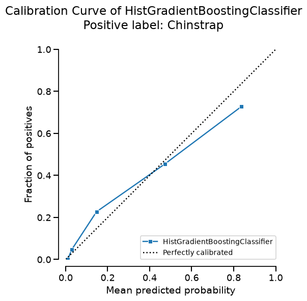
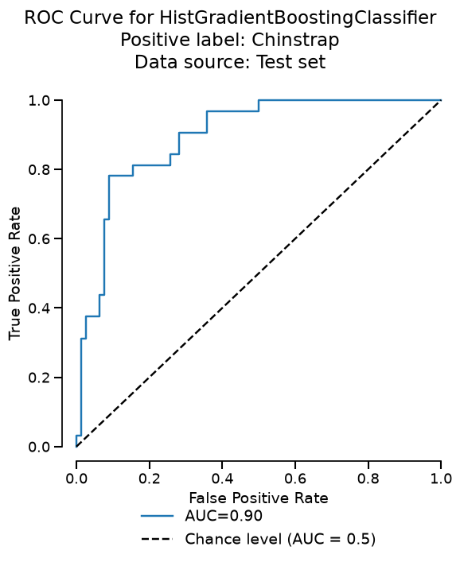
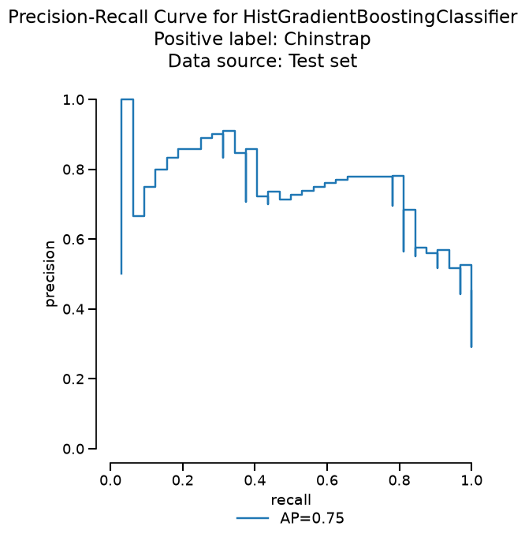
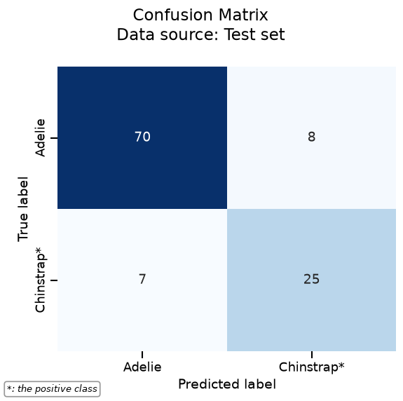
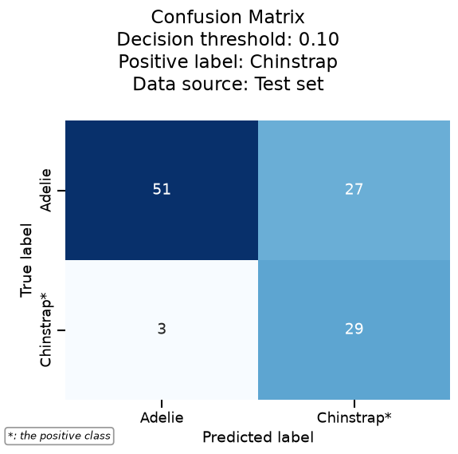

Classification metrics#
This notebook looks at three ways to score a classifier: the probabilities it produces, the ranking of those probabilities, and the class it predicts once a threshold is chosen.
We come back to the penguins dataset and keep two species, with Chinstrap as the positive class.
Environment setup#
Run this cell in JupyterLite. A local installation already provides these packages.
%pip install -q "scikit-learn~=1.9.1" "skrub~=0.11.0" "skore~=0.29.0" pandas matplotlib
/home/runner/work/sgap-2026/sgap-2026/.pixi/envs/default/bin/python: No module named pip
Note: you may need to restart the kernel to use updated packages.
import pandas as pd
df = pd.read_csv("../datasets/penguins.csv")
df
| studyName | Sample Number | Species | Region | Island | Stage | Individual ID | Clutch Completion | Date Egg | Culmen Length (mm) | Culmen Depth (mm) | Flipper Length (mm) | Body Mass (g) | Sex | Delta 15 N (o/oo) | Delta 13 C (o/oo) | Comments | |
|---|---|---|---|---|---|---|---|---|---|---|---|---|---|---|---|---|---|
| 0 | PAL0708 | 1 | Adelie Penguin (Pygoscelis adeliae) | Anvers | Torgersen | Adult, 1 Egg Stage | N1A1 | Yes | 2007-11-11 | 39.1 | 18.7 | 181.0 | 3750.0 | MALE | NaN | NaN | Not enough blood for isotopes. |
| 1 | PAL0708 | 2 | Adelie Penguin (Pygoscelis adeliae) | Anvers | Torgersen | Adult, 1 Egg Stage | N1A2 | Yes | 2007-11-11 | 39.5 | 17.4 | 186.0 | 3800.0 | FEMALE | 8.94956 | -24.69454 | NaN |
| 2 | PAL0708 | 3 | Adelie Penguin (Pygoscelis adeliae) | Anvers | Torgersen | Adult, 1 Egg Stage | N2A1 | Yes | 2007-11-16 | 40.3 | 18.0 | 195.0 | 3250.0 | FEMALE | 8.36821 | -25.33302 | NaN |
| 3 | PAL0708 | 4 | Adelie Penguin (Pygoscelis adeliae) | Anvers | Torgersen | Adult, 1 Egg Stage | N2A2 | Yes | 2007-11-16 | NaN | NaN | NaN | NaN | NaN | NaN | NaN | Adult not sampled. |
| 4 | PAL0708 | 5 | Adelie Penguin (Pygoscelis adeliae) | Anvers | Torgersen | Adult, 1 Egg Stage | N3A1 | Yes | 2007-11-16 | 36.7 | 19.3 | 193.0 | 3450.0 | FEMALE | 8.76651 | -25.32426 | NaN |
| ... | ... | ... | ... | ... | ... | ... | ... | ... | ... | ... | ... | ... | ... | ... | ... | ... | ... |
| 339 | PAL0910 | 64 | Chinstrap penguin (Pygoscelis antarctica) | Anvers | Dream | Adult, 1 Egg Stage | N98A2 | Yes | 2009-11-19 | 55.8 | 19.8 | 207.0 | 4000.0 | MALE | 9.70465 | -24.53494 | NaN |
| 340 | PAL0910 | 65 | Chinstrap penguin (Pygoscelis antarctica) | Anvers | Dream | Adult, 1 Egg Stage | N99A1 | No | 2009-11-21 | 43.5 | 18.1 | 202.0 | 3400.0 | FEMALE | 9.37608 | -24.40753 | Nest never observed with full clutch. |
| 341 | PAL0910 | 66 | Chinstrap penguin (Pygoscelis antarctica) | Anvers | Dream | Adult, 1 Egg Stage | N99A2 | No | 2009-11-21 | 49.6 | 18.2 | 193.0 | 3775.0 | MALE | 9.46180 | -24.70615 | Nest never observed with full clutch. |
| 342 | PAL0910 | 67 | Chinstrap penguin (Pygoscelis antarctica) | Anvers | Dream | Adult, 1 Egg Stage | N100A1 | Yes | 2009-11-21 | 50.8 | 19.0 | 210.0 | 4100.0 | MALE | 9.98044 | -24.68741 | NaN |
| 343 | PAL0910 | 68 | Chinstrap penguin (Pygoscelis antarctica) | Anvers | Dream | Adult, 1 Egg Stage | N100A2 | Yes | 2009-11-21 | 50.2 | 18.7 | 198.0 | 3775.0 | FEMALE | 9.39305 | -24.25255 | NaN |
344 rows × 17 columns
feature_names = [
"Island",
"Culmen Depth (mm)",
"Flipper Length (mm)",
"Body Mass (g)",
"Sex",
]
target_name = "Species"
X = df[feature_names]
y = df[target_name]
categorical_columns = X.select_dtypes(include=["object", "str"]).columns
X[categorical_columns] = X[categorical_columns].astype("category")
The class name is printed on the confusion matrix, so we keep the common name.
positive = "Chinstrap"
y = y.replace(
{
"Adelie Penguin (Pygoscelis adeliae)": "Adelie",
"Chinstrap penguin (Pygoscelis antarctica)": "Chinstrap",
}
)
classes_to_keep = ["Adelie", positive]
X = X[y.isin(classes_to_keep)]
y = y[y.isin(classes_to_keep)]
from sklearn.ensemble import HistGradientBoostingClassifier
hist_gradient_boosting = HistGradientBoostingClassifier(categorical_features="from_dtype")
One report#
evaluate fits the model on one part of the data and scores it on the held-out part.
Each figure below is that single test set. Average precision is not a built-in metric,
so we register it on the report and call it with the others.
from skore import evaluate
report = evaluate(hist_gradient_boosting, X, y, pos_label=positive, splitter=0.5)
report.metrics.add("average_precision")
report
| Metric | HistGradientBoostingClassifier |
|---|---|
| average_precision | 0.746867 |
| Default estimator score | 0.863636 |
| Accuracy | 0.863636 |
| Precision | 0.757576 |
| Recall | 0.781250 |
| ROC AUC | 0.895433 |
| Log loss | 0.372673 |
| Brier score | 0.118009 |
| Fit time (s) | 0.055590 |
| Predict time (s) | 0.004377 |
- [SKD001] Potential overfitting. Significant train/test gaps were found for 6/8 default predictive metrics.
- [SKD016] Estimator not tuned. Estimator(s) left at default settings; consider tuning: ['learning_rate', 'max_leaf_nodes'] for HistGradientBoostingClassifier.
- [SKD003] Inconsistent performance across splits. Not applicable to estimator reports.
- [SKD005] Underrepresented classes. ML task is not multiclass classification. Got binary-classification.
- [SKD006] Coefficient interpretation. Estimator is not a linear model: it does not have a `coef_` attribute.
- [SKD007] MDI biased for high-cardinality features. Estimator is not a tree-based model: it does not have a `feature_importances_` attribute.
- [SKD013] Train-test overlap in time series. No datetime column found.
- [SKD014] Hyperparameters at search edge. Estimator is not a BaseSearchCV instance. Got HistGradientBoostingClassifier.
- [SKD015] Hyperparameters worth tuning. Estimator is not a BaseSearchCV instance. Got HistGradientBoostingClassifier.
No checks were muted.
Fast mode is on: expensive checks are skipped unless already cached.
Mute a check by passing its code to ignore, e.g. .checks.summarize(ignore=['SKD001']).
HistGradientBoostingClassifier()In a Jupyter environment, please rerun this cell to show the HTML representation or trust the notebook.
On GitHub, the HTML representation is unable to render, please try loading this page with nbviewer.org.
Parameters
Fitted attributes
| Island | Culmen Depth (mm) | Flipper Length (mm) | Body Mass (g) | Sex | Species | |
|---|---|---|---|---|---|---|
| 0 | Torgersen | 19.0 | 199. | 4.00e+03 | MALE | Adelie |
| 1 | Torgersen | 18.9 | 197. | 4.15e+03 | MALE | Adelie |
| 2 | Dream | 18.8 | 202. | 3.80e+03 | MALE | Chinstrap |
| 3 | Dream | 16.5 | 189. | 3.65e+03 | FEMALE | Chinstrap |
| 4 | Biscoe | 17.7 | 193. | 3.20e+03 | FEMALE | Adelie |
| 215 | Biscoe | 19.1 | 194. | 3.75e+03 | MALE | Adelie |
| 216 | Dream | 17.6 | 187. | 3.42e+03 | FEMALE | Adelie |
| 217 | Dream | 17.3 | 193. | 3.60e+03 | FEMALE | Chinstrap |
| 218 | Dream | 19.7 | 196. | 4.40e+03 | MALE | Adelie |
| 219 | Torgersen | 17.1 | 186. | 3.30e+03 | Adelie |
Island
CategoricalDtype- Null values
- 0 (0.0%)
- Unique values
- 3 (1.4%)
Culmen Depth (mm)
Float64DType- Null values
- 1 (0.5%)
- Unique values
-
52 (23.6%)
This column has a high cardinality (> 40).
- Mean ± Std
- 18.4 ± 1.19
- Median ± IQR
- 18.4 ± 1.60
- Min | Max
- 15.5 | 21.5
Flipper Length (mm)
Float64DType- Null values
- 1 (0.5%)
- Unique values
- 35 (15.9%)
- Mean ± Std
- 192. ± 7.24
- Median ± IQR
- 191. ± 9.00
- Min | Max
- 172. | 212.
Body Mass (g)
Float64DType- Null values
- 1 (0.5%)
- Unique values
-
62 (28.2%)
This column has a high cardinality (> 40).
- Mean ± Std
- 3.71e+03 ± 436.
- Median ± IQR
- 3.70e+03 ± 600.
- Min | Max
- 2.70e+03 | 4.80e+03
Sex
CategoricalDtype- Null values
- 6 (2.7%)
- Unique values
- 3 (1.4%)
Species
StringDtype- Null values
- 0 (0.0%)
- Unique values
- 2 (0.9%)
No columns match the selected filter: . You can change the column filter in the dropdown menu above.
| Column | Column name | dtype | Is sorted | Null values | Unique values | Mean | Std | Min | Median | Max |
|---|---|---|---|---|---|---|---|---|---|---|
| 0 | Island | CategoricalDtype | False | 0 (0.0%) | 3 (1.4%) | |||||
| 1 | Culmen Depth (mm) | Float64DType | False | 1 (0.5%) | 52 (23.6%) | 18.4 | 1.19 | 15.5 | 18.4 | 21.5 |
| 2 | Flipper Length (mm) | Float64DType | False | 1 (0.5%) | 35 (15.9%) | 192. | 7.24 | 172. | 191. | 212. |
| 3 | Body Mass (g) | Float64DType | False | 1 (0.5%) | 62 (28.2%) | 3.71e+03 | 436. | 2.70e+03 | 3.70e+03 | 4.80e+03 |
| 4 | Sex | CategoricalDtype | False | 6 (2.7%) | 3 (1.4%) | |||||
| 5 | Species | StringDtype | False | 0 (0.0%) | 2 (0.9%) |
No columns match the selected filter: . You can change the column filter in the dropdown menu above.
Please enable javascript
The skrub table reports need javascript to display correctly. If you are displaying a report in a Jupyter notebook and you see this message, you may need to re-execute the cell or to trust the notebook (button on the top right or "File > Trust notebook").
Probability estimates#
predict_proba returns a probability for each class. With a positive class set, the
report gives the probability of that class. A few test rows:
probabilities = report.get_predictions(data_source="test", response_method="predict_proba")
pd.Series(probabilities, name=positive).head()
0 0.224064
1 0.258895
2 0.007173
3 0.905269
4 0.912434
Name: Chinstrap, dtype: float64
Log loss scores these probabilities. It is a proper scoring rule: it is smallest when the predicted probabilities match the true probabilities. The Brier score is the other usual proper scoring rule. Accuracy only sees the class chosen after a threshold, so it does not score the probabilities.
We can decompose the Brier score after grouping predictions into bins:
Here, \(\bar{p}_b\) is the mean predicted probability in bin \(b\), \(\bar{y}_b\) is its observed positive fraction, and \(n_b\) is its number of samples. Reliability is the calibration loss: it is small when the probabilities agree with the observed frequencies. Resolution rewards groups with different observed frequencies, so it is related to separating and ranking positive and negative cases. Uncertainty is \(\bar{y}(1 - \bar{y})\), the variance of the outcome. It depends only on how common the positive class is, so the model cannot change it. It is largest when the two classes are equally common. ROC AUC and average precision score the ranking directly; they do not assess calibration. Proper scoring rules assess both the probability values and this ability to separate cases.
report.metrics.log_loss()
0.37267253882956913
The calibration curve draws those bins. The horizontal position of a point is \(\bar{p}_b\), the mean predicted probability in the bin, and the vertical position is \(\bar{y}_b\), the observed fraction of Chinstrap penguins. A calibrated model lies on the diagonal, where the two agree.
report.inspection.calibration_curve(n_bins="auto").plot()

Ranking#
A ranking metric judges the order of the scores, not their magnitude.
The ROC curve follows the true-positive rate and the false-positive rate as the threshold moves. The area under that curve is the ROC AUC.
report.metrics.roc_auc()
0.8954326923076923
report.metrics.roc().plot()

The precision-recall curve follows precision and recall over the same thresholds. Average precision summarizes that curve. At each threshold it takes the precision and weights it by the gain in recall since the previous threshold.
report.metrics.precision_recall().plot()

report.metrics.average_precision()
0.7468670435631815
Thresholded decisions#
A confusion matrix is the decision at one threshold. The default cut is a probability of 0.5. Precision and recall are counts from that matrix, so they move when the cut moves.
report.metrics.confusion_matrix().plot()

The same matrix at a probability of 0.1. A lower cut predicts Chinstrap more often.
report.metrics.confusion_matrix().plot(threshold_value=0.1)

FixedThresholdClassifier applies a threshold we choose. It is useful when the cost
of a mistake is known in advance. A low threshold predicts the positive class more
often, which is what we want when missing a positive case is expensive.
from sklearn.model_selection import FixedThresholdClassifier
fixed_threshold = FixedThresholdClassifier(hist_gradient_boosting, threshold=0.1)
fixed_threshold.fit(report.X_train, report.y_train)
fixed_threshold.threshold
0.1
TunedThresholdClassifierCV searches for the threshold that maximizes a metric, here
the F1 score of the positive class. The search uses cross-validation. The fitted
model stays the same; only the decision cut changes.
from sklearn.metrics import f1_score, make_scorer
from sklearn.model_selection import TunedThresholdClassifierCV
scorer = make_scorer(f1_score, pos_label=positive)
tuned_threshold = TunedThresholdClassifierCV(hist_gradient_boosting, scoring=scorer, cv=5)
tuned_threshold.fit(report.X_train, report.y_train)
tuned_threshold.best_threshold_
np.float64(0.17405832791472983)
Conclusion#
A classifier can be scored in three ways, and each way answers a different question.
Log loss and the Brier score judge the probabilities themselves. The Brier score splits
into reliability, resolution, and uncertainty, and the calibration curve shows the
reliability term: predicted probabilities against the observed fraction of the positive
class. ROC AUC and average precision judge the ranking of those scores, whatever
threshold we later choose. A confusion matrix, precision, and recall are the decision
at one cut. FixedThresholdClassifier applies a cut we choose, and
TunedThresholdClassifierCV searches for the cut that maximizes a metric. One
evaluate report holds the probabilities, the curves, and both matrices.